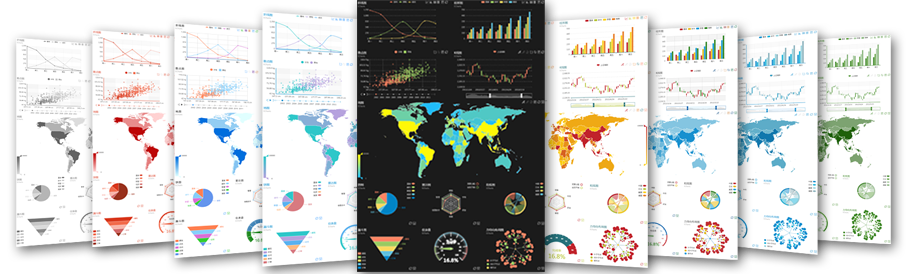

入门教程 ( Getting started ) » Any feedback or question ? »
主题预览 ECharts Theme »，主题定制调试工具 ECharts Theme Designer »
ps:别太依赖代码编辑区，没做本地缓存，页面刷新就没了，建议使用一个本地编辑器编辑主题，只用代码区作为主题定制调试工具。主题写好试试顶部的SaveAsImage（IE8-不支持），会把所有图表合并到一张图中，这是默认样式，期待与我们联系，show出你的主题，让你的设计成为ECharts内置甚至默认主题随时有可能，我们将为您献上一份小礼品同时你的名字将被永留在贡献者名单中。
专题页没做低版本IE兼容性处理，请用IE9+、chrome、safari、firefox或opear等现代浏览器。